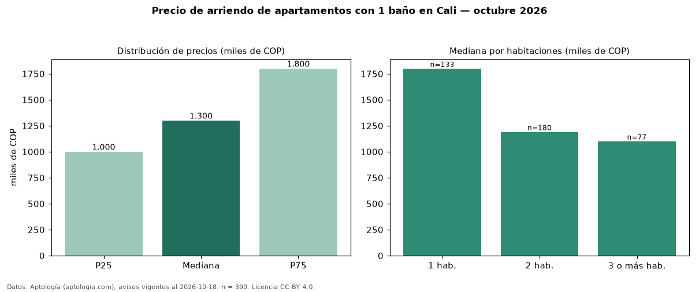

Precio de arriendo de apartamentos con 1 baño en Cali — octubre 2026
COP 1,30 millones al mes es el canon mediano de apartamentos con 1 baño en arriendo en Cali (n = 390 avisos). Frente a la mediana de todos los apartamentos en arriendo de Cali (COP 1,90 millones, n = 1.614), queda 32 % por debajo; este segmento reúne el 24 % de esos avisos. Por metro cuadrado, la mediana es COP 25.490/m² al mes (n = 331), 15 % por debajo del conjunto de referencia (COP 30.000/m²). El área mediana anunciada es 55 m². El segmento con más oferta es el de 2 habitaciones (180 avisos, mediana COP 1,19 millones); pasar de 1 habitación a 3 o más habitaciones cambia la mediana −39 %. La administración mediana declarada es COP 247.000 al mes (n = 28), aparte del canon. La mitad central de los avisos va de COP 1,00 millones a COP 1,80 millones (razón 1,8), una dispersión moderada. El estrato más frecuente es 3 (38 % de los avisos con estrato). Datos: Aptología (aptologia.com), CC BY 4.0 — https://www.aptologia.com/arriendo/cali. Archivos: PDF, CSV con las cifras y gráfica PNG.

| Avisos únicos | 390 |
|---|---|
| Percentil 25 | COP 1.000.000 |
| Mediana | COP 1.300.000 |
| Percentil 75 | COP 1.800.000 |
| Mediana por m² | COP 25.490 |
Fuente: avisos vigentes de portales inmobiliarios recopilados por Aptología, deduplicados (mínimo 30 avisos únicos por celda). Precios pedidos, no cerrados. Fecha: 2026-10-18.